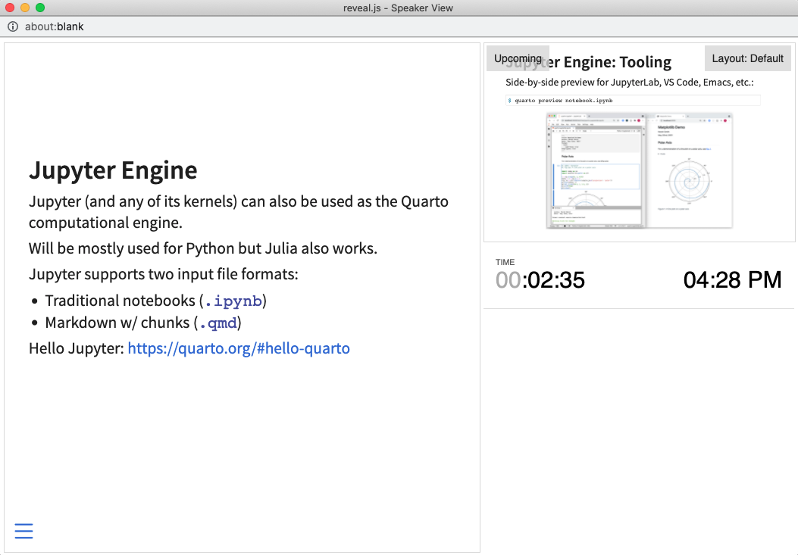
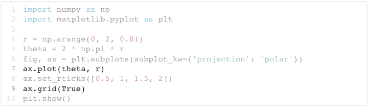

Revealjs
Overview
You can create Revealjs presentations using the revealjs format. The best way to get a sense for the capabilities of Revealjs is this demo presentation:
If you prefer to view the demo in a standalone browser you can do that here. Check out the source code for the demo to see how the slides were created.
See the Revealjs format reference for a comprehensive overview of all options supported for Revealjs output.
Creating Slides
In markdown, slides are delineated using headings. For example, here is a simple slide show with two slides (each defined with a level 2 heading (##):
---
title: "Habits"
author: "John Doe"
format: revealjs
---
## Getting up
- Turn off alarm
- Get out of bed
## Going to sleep
- Get in bed
- Count sheepYou can also divide slide shows into sections with title slides using a level 1 header (#). For example:
---
title: "Habits"
author: "John Doe"
format: revealjs
---
# In the morning
## Getting up
- Turn off alarm
- Get out of bed
## Breakfast
- Eat eggs
- Drink coffee
# In the evening
## Dinner
- Eat spaghetti
- Drink wine
## Going to sleep
- Get in bed
- Count sheepFinally, you can also delineate slides using horizontal rules (for example, if you have a slide without a title):
---
title: "Habits"
author: "John Doe"
format: revealjs
---
- Turn off alarm
- Get out of bed
---
- Get in bed
- Count sheepThe examples above all use level 2 headings for slides and level 1 headings for sections/title slides. You can customize this using the slide-level option (See the Pandoc documentation on structuring the slide show for additional details.
Incremental Lists
By default number and bullet lists within slides are displayed all at once. You can override this globally using the incremental option. For example:
title: "My Presentation"
format:
revealjs:
incremental: true You can also explicitly make any list incremental or non-incremental by surrounding it in a div with an explicit class that determines the mode. To make a list incremental do this:
::: {.incremental}
- Eat spaghetti
- Drink wine
:::To make a list non-incremental do this:
::: {.nonincremental}
- Eat spaghetti
- Drink wine
:::You can also insert a pause within a slide (keeping the content after the pause hidden) by inserting three dots separated by spaces:
## Slide with a pause
content before the pause
. . .
content after the pauseMultiple Columns
To put material in side by side columns, you can use a native div container with class .columns, containing two or more div containers with class .column and a width attribute:
:::: {.columns}
::: {.column width="40%"}
contents...
:::
::: {.column width="60%"}
contents...
:::
::::Content Overflow
If you have a slide that has more content than can be displayed on a single frame there are two slide-level classes you can apply to mitigate this:
Use the
.smallerclass to use a smaller typeface so that more text fits on the slide. For example:## Slide Title {.smaller}Use the
.scrollableclass to make off-slide content available by scrolling. For example:## Slide Title {.scrollable}
Both of these options can also be applied globally to all slides as follows:
---
title: "Presentation"
format:
revealjs:
smaller: true
scrollable: trueSpeaker Notes
You can add speaker notes to a slide using a div with class .notes. For example:
## Slide with speaker notes
Slide content
::: {.notes}
Speaker notes go here.
:::Press the S key (or use the Navigation Menu) to show the presentation speaker view:

You’ll typically use this view on one screen (e.g. your laptop) while presenting the slides on another screen.
Themes
There are 11 built-in themes provided for Reveal presentations (you can also create your own themes). The default and dark themes use fairly classic typography and color schemes and are a good place to start.
The default theme is used automatically — use the theme option to switch to an alternate theme. For example
---
title: "Presentation"
format:
revealjs:
theme: dark
---Here is the full list of available themes:
beigeblooddarkdefaultleaguemoonnightserifsimpleskysolarized
See the article on Reveal Themes for additional details on customizing themes and creating brand new themes of your own.
Code Blocks
Most of the core capabilities of Quarto HTML Code Blocks are available for Reveal slides, including code folding, code copy, and the ability to pick a custom syntax highlighting theme. Note that if you choose a dark Reveal theme then the default Quarto dark syntax highlighting theme will be used.
Line Highlighting
You may want to highlight specific lines of code output (or even highlight distinct lines over a progression of steps). You can do this using the code-line-numbers attribute of code blocks. For example:
```{.python code-line-numbers="6-8"}
import numpy as np
import matplotlib.pyplot as plt
r = np.arange(0, 2, 0.01)
theta = 2 * np.pi * r
fig, ax = plt.subplots(subplot_kw={'projection': 'polar'})
ax.plot(theta, r)
ax.set_rticks([0.5, 1, 1.5, 2])
ax.grid(True)
plt.show()
```
Note that you can also highlight disparate ranges of lines by separating them with a comma. For example:
```{.python code-line-numbers="7,9"}
import numpy as np
import matplotlib.pyplot as plt
r = np.arange(0, 2, 0.01)
theta = 2 * np.pi * r
fig, ax = plt.subplots(subplot_kw={'projection': 'polar'})
ax.plot(theta, r)
ax.set_rticks([0.5, 1, 1.5, 2])
ax.grid(True)
plt.show()
```
Finally, you can highlight different line ranges progressively by separating them with |. For example, here we start by showing all lines, then progress to highlighting line 6, and finally to highlighting line 9:
```{.python code-line-numbers="|6|9"}
import numpy as np
import matplotlib.pyplot as plt
r = np.arange(0, 2, 0.01)
theta = 2 * np.pi * r
fig, ax = plt.subplots(subplot_kw={'projection': 'polar'})
ax.plot(theta, r)
ax.set_rticks([0.5, 1, 1.5, 2])
ax.grid(True)
plt.show()
```You can use this same option within an executable code cell by using the code-line-numbers cell options:
```{python}
#| echo: true
#| code-line-numbers: "|6|9"
import numpy as np
import matplotlib.pyplot as plt
```Executable Code
You can include the output of executable code blocks on slides just the same as with other Quarto documents. This works essentially the same for slides as it does for other formats, however there are a couple of special considerations for slides covered below.
Figure Size
You will frequently need to customize the size of figures created for slides so that they either fill the entire slide or whatever region of the slide you need them to. Quarto provides some help here: for Python the figure sizes for Matplotlib and Plotly Express are set to fill the slide area below the title, and for R the Knitr figure width and height are similarly defaulted.
Nevertheless, you will frequently need to change these defaults for a given figure. The details on how to do this vary by graphics library. Here’s an example of explicitly sizing an Altair plot:
alt.Chart(cars).mark_point().encode(
x='Horsepower',
y='Miles_per_Gallon',
color='Origin',
).properties(
width=800,
height=480
).interactive()Code Echo
Unlike with ordinary documents, within Quarto presentations executable code blocks do not echo their source code by default (this is because often the code produces a figure that wants to occupy as much vertical space as possible). You can override this behavior using the echo option. For example:
```{python}
#| echo: true
import numpy as np
import matplotlib.pyplot as plt
r = np.arange(0, 2, 0.01)
theta = 2 * np.pi * r
fig, ax = plt.subplots(subplot_kw={'projection': 'polar'})
ax.plot(theta, r)
ax.set_rticks([0.5, 1, 1.5, 2])
ax.grid(True)
plt.show()
```See the documentation on Running Code for more details on the various other ways to customize output from code execution.
Tabsets
You can add tabbed content to slides using the standard Quarto syntax for tabsets. For example:
::: {.panel-tabset}
### Tab A
Tab content...
### Tab B
Tab content...
:::Note that one significant disadvantage to tabsets is that only the first tab will be visible when printing to PDF.
Slide Backgrounds
Slides are contained within a limited portion of the screen by default to allow them to fit any display and scale uniformly. You can apply full page backgrounds outside of the slide area by adding a background attribute to your slide headers. Four different types of backgrounds are supported: color, image, video and iframe.
All CSS color formats are supported, including hex values, keywords, rgba() or hsl(). For example:
## Slide Title {background-color="aquamarine"}You can also use various types of media (image, video, or iframe) as your slide background. These options are described below.
Note that if the background color of your media differs from your presentation’s theme (e.g. a dark image when using a light theme) then you should also explicitly set the background-color so that text on top of the background appears in the correct color (e.g. light text on a dark background).
Image Backgrounds
By default, background images are resized to cover the full page. Available options:
| Attribute | Default | Description |
|---|---|---|
background-image |
URL of the image to show. GIFs restart when the slide opens. | |
background-size |
cover | See background-size on MDN. |
background-position |
center | See background-position on MDN. |
background-repeat |
no-repeat | See background-repeat on MDN. |
background-opacity |
1 | Opacity of the background image on a 0-1 scale. 0 is transparent and 1 is fully opaque. |
For example:
## Slide Title {background-color="black" background-image="dark-image.png" background-size="100px" background-repeat="repeat"}
This slide's background image will be sized to 100px and repeated.Since this image has a dark background and our slides use the default (light) theme, we explicitly set the background-color to black so that text drawn on top of it is light.
Video Backgrounds
Automatically plays a full size video behind the slide.
| Attribute | Default | Description |
|---|---|---|
background-video |
A single video source, or a comma separated list of video sources. | |
background-video-loop |
false | Flags if the video should play repeatedly. |
background-video-muted |
false | Flags if the audio should be muted. |
background-size |
cover | Use cover for full screen and some cropping or contain for letterboxing. |
background-opacity |
1 | Opacity of the background video on a 0-1 scale. 0 is transparent and 1 is fully opaque. |
For example:
## Slide Title {background-video="video.mp4" background-video-loop="true" background-video-muted="true"}
This slides's background video will play in a loop with audio muted.IFrame Backgrounds
Embeds a web page as a slide background that covers 100% of the reveal.js width and height. The iframe is in the background layer, behind your slides, and as such it’s not possible to interact with it by default. To make your background interactive, you can add the background-interactive attribute.
| Attribute | Default | Description |
|---|---|---|
background-iframe |
URL of the iframe to load | |
background-interactive |
false | Include this attribute to make it possible to interact with the iframe contents. Enabling this will prevent interaction with the slide content. |
For example:
## Slide Title {background-iframe="https://example.com"}Learning More
See these articles lo learn about more advanced capabilities of Reveal:
- Presenting Slides describes slide navigation, printing to PDF, drawing on slides using a chalkboard, and creating multiplex presentations.
- Advanced Reveal delves into transitions, animations, advanced layout and positioning, and other options available for customizing presentations.
- Reveal Themes talks about using and customizing existing themes as well as creating brand new themes.